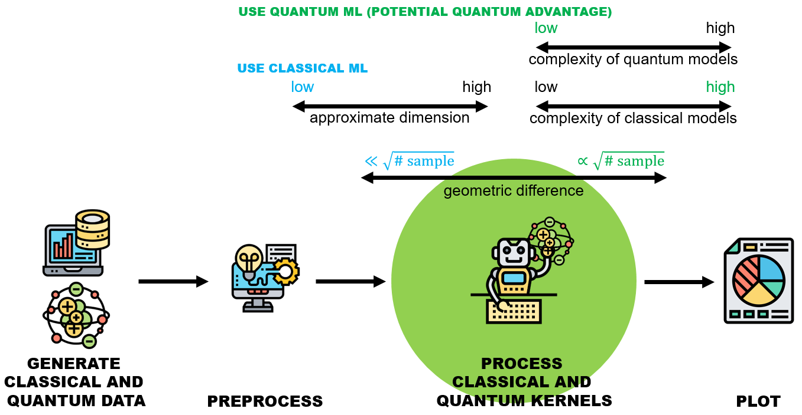

Welcome to QuASK’s documentation!
Quantum Advantage Seeker with Kernel
{kind=link}
QuASK is a quantum machine learning software written in Python that supports researchers in designing, experimenting, and assessing different quantum and classic kernels performance. This software is package agnostic and can be integrated with all major quantum software packages (e.g. IBM Qiskit, Xanadu’s Pennylane, Amazon Braket).
QuASK guides the user through a simple preprocessing of input data, definition and calculation of quantum and classic kernels, either custom or pre-defined ones. From this evaluation the package provide an assessment about potential quantum advantage and prediction bounds on generalization error.
Beyond theoretical framing, it allows for the generation of parametric quantum kernels that can be trained using gradient-descent-based optimization, grid search, or genetic algorithms. Projected quantum kernels, an effective solution to mitigate the curse of dimensionality induced by the exponential scaling dimension of large Hilbert spaces, is also calculated. QuASK can also generate the observable values of a quantum model and use them to study the prediction capabilities of the quantum and classical kernels. The initial release is accompanied by the journal article [“QuASK - Quantum Advantage Seeker with Kernels” available on arxiv.org] ( https://arxiv.org/abs/2206.15284 ).
Contents: